Участие в Brompton World Championship 2015 в Лондоне
Крутить к разделу:
- С чего всё началось
- Заявка
- Гостиница, авиабилеты, виза
- Экипировка
- Транспортировка велосипеда
- Пробные заезды и подготовка к гонке
- День чемпионата
- Ссылки
С чего всё началось
А началось всё с покупки Бромптона в 2012 году и регистрации (добавления серийного номера) велосипеда на официальном сайте Brompton. На следующий год пришло письмо, мол, «не пропустите главную покатушку года — BWC». Я посмотрел ролики, фотки, подивился чудным костюмам участников и подумал: «а здорово было бы съездить». Но до дела так и не дошло.
Прошёл год, я получил очередное письмо про чемпионат, уже 2014 года. Поговорил с друзьями — не желает ли кто на юг от Лондона сгонять в этих числах, но никто не проявил энтузиазма. В общем, у меня желания ехать одному особо не было и опять я отказался от участия.
Спустя ещё год пришло письмо про юбилейный десятый чемпионат, который должен пройти прямо в центре Лондона. Опыт пребывания в Лондоне у меня уже на тот момент был. Я решил, что заявку на участие надо подавать, а там как повезёт, может, со мной ещё кто соберётся.
Заявка
В письме о чемпионате была ссылка на регистрацию, открытую до 7 апреля. На странице по ссылке нужно было заполнить стандартную форму, в основном с личными данными. Но был один вопрос, который потом отразился на стартовой позиции в гонке — «За какое время вы проедете 17 км?». Именно на основе ответа на этот вопрос участникам присваивался номер и стартовая группа.
Через две-три недели пришло письмо о том, что я попал в число участников. А для того, чтобы подтвердить участие, мне необходимо заплатить взнос — £40. Что я и сделал.
Дальше было время, чтобы выбрать гостиницу, билеты на самолёт, сделать британскую визу, подобрать экипировку.
Гостиница, авиабилеты, виза
Заполнить анкету на визу проще, зная, сколько будут стоить билеты на самолёт и проживание в гостинице, так как в анкете есть пункт про наличие средств на поездку, где нужно расписать сколько денег на какие цели будет потрачено.
Билеты были выбраны самые дешёвые, но не лоукостер, так как необходимо было везти велосипед, а мой весит около 12.5 кг. С лоукостером пришлось бы доплачивать за лишний вес.
Гостиница выбиралась по принципу «максимально близко к месту проведения гонки и как можно дешевле». В результате получилось поселиться у северо-западного угла Гайд парка. Чтобы попасть на трассу, надо было пересечь Гайд парк и Грин парк — всего пара километров и, в основном, по велодорожкам. 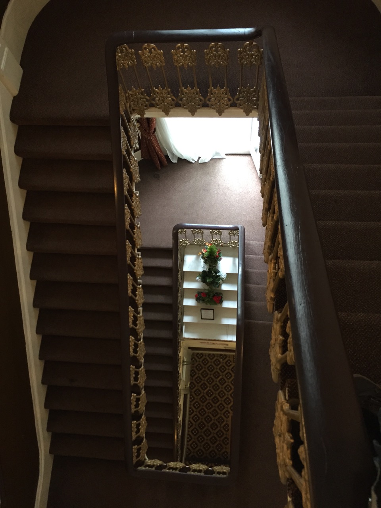
После покупки билетов и бронирования гостиницы стал собирать документы на визу: справку с работы и выписку о движении средств из банка (в моём банке она бесплатная и выдаётся сразу на русском и английском языках). Через десять дней после подачи документов в визовый центр полугодовая виза была готова.
Экипировка
Несмотря на необычные для велогонки требования к экипировке (пиджак, бабочка), одной из больших проблем оказался выбор шлема. Дело в том, что я никогда раньше не пользовался велошлемом. И ничего на примете у меня не было. Пришлось изучать рынок и делать выбор. К тому же удобные шлемы довольно дороги. Присматривался к шлемам Lazer, Abus, Casco. В результате остановился на том, что был в наличии в Москве — Casco Activ-TC.
Позже стал подбирать галстук. Бабочка показалась самым простым вариантом, так как незаметна при езде (галстук может развеваться). Коричневая — под цвет заплаток на пиджаке.
А вот шорты найти в Москве мне так и не удалось. В результате их пришлось подбирать уже в Лондоне. Всё получилось, но рассматривался и запасной вариант — поехать в подвёртнутых джинсах, выбранный пиджак вполне позволял такую вольность. 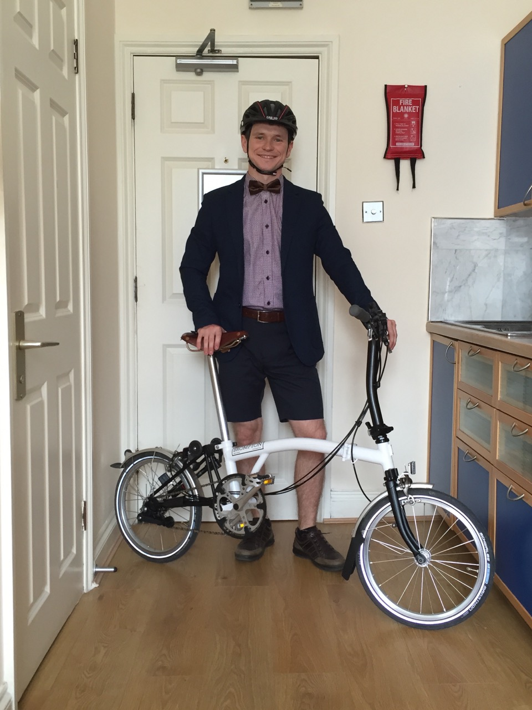
Транспортировка велосипеда
Большинство авиакомпаний не требует дополнительной платы за перевозку велосипеда, если он перевозится в разобранном виде (колёса сняты, всё упаковано в чехол). Бромптон в сложенном виде проходит по габаритам и весу, как сдаваемый багаж. Но церемониться с ним грузчики не будут, потому основной проблемой является перевозка велосипеда неповреждённым.
С самого начала я думал, что буду возить бромптон с собой и покупал его с сумкой B-bag. Но до этой поездки B-bag служила только для хранения вела зимой. В общем, передо мной не стояло вопроса «в чём везти?», но стоял вопрос «как паковать?».
Почитал советы в интернетах, пришёл к выводу, что нужно приспустить колёса, снять седло, ручки фиксации рамы и руля, а также обложить велосипед одеждой. Для упаковки одежды купил пару китайских складных сумок на 35 литров и набор отделений для вещей (два больших плоских кармана и один поменьше). 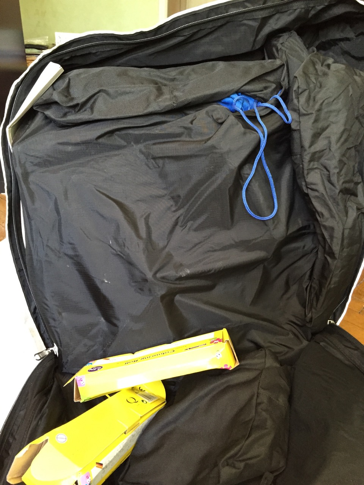
В итоге со всех сторон от велосипеда лежала одежда, кроме одной — со стороны петель была только ткань чехла и сумки. Даже при очень тщательном и аккуратном размещении вещей вокруг велосипеда B-bag теряет форму, а внутри неё остаётся довольно много свободного пространства, которое уже нельзя занять одеждой — есть риск выйти за границы допустимого веса багажа (20 кг). В моём случае получилось 19,5 кг. После упаковки в плёнку B-bag теряет форму, её становится трудно везти на колёсиках. Для себя заключил, что B-bag — не самый лучший вариант перевозки Бромптона в самолёте (трудно паковать, не удобно везти до аэропорта, не гарантирует защиту велосипеда от повреждений, довольно громоздкая в сложенном виде). Фотографии запакованного в B-bag велосипеда (это уже вторая попытка, в первую всё было хуже).
Пробные заезды и подготовка к гонке
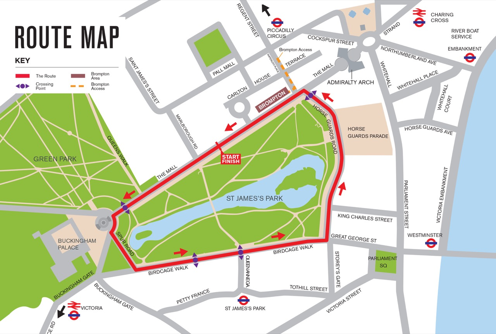 За пару дней до гонки я доехал до трассы чемпионата — дороги вокруг Сент-Джеймс парка. И проехал по ней около четырёх кругов. На последнем круге стало понятно, что трёхскоростная втулка перестала переключаться на самую низкую передачу, а седло начало сползать вниз. Хотя перед отъездом всё было в порядке.
С передачей всё оказалось просто — после перелёта сбилась настройка, так как раскрутилась гайка, фиксирующая цепочку, идущую от тросика во втулку колеса. Посмотрел ролик про настройку этого места и быстро всё исправил.
С седлом же было опасение, что придётся подтягивать гайку эксцентрика, а необходимого ключа с собой нет. Но оказалось, достаточно снять подседельный штырь и обезжирить его. А также почистить пластиковую вкладку от образовавшихся за время эксплуатации пыли и стружки. Заодно была установлена вставка, позволяющая поднимать седло сразу на нужную высоту (aka Saddle Height Insert).
День чемпионата
В финальном письме было сказано, что регистрация начнётся в 11 и закончится в 15 часов. С 16 до 16:30 будет проходить так называемый «grid setup», в 16:40 — инструктаж, а в 17:00 будет дан старт.
Также в письме говорилось, что мне выслан конверт с пропуском в зону для участников и гостей, моим номером и полными правилами соревнований. Но в Россию этот конверт к моменту моего отъезда не пришёл. И меня заверили, что я могу получить конверт в день гонки.
Так как номеров и правил у меня на руках не было, а добираться до трассы мы со спутницей планировали на бромптонах (второй бромптон был взят на прокат уже в Лондоне), то было принято решение выезжать как можно раньше. В результате приехали мы почти к самому открытию регистрации. Заодно удалось поучаствовать в большом велопробеге (Prudential Ride London), который проходил в Лондоне в этот же день. Трасса же чемпионата была организована прямо на участке велопробега. 
При входе в зону бромптона стояли две палатки, где и выдавались запасные конверты с номерами — нужно было только показать паспорт. Дальше организаторы сверялись со списками и выдавали заветный конверт и пропуски (для участника и одного гостя). 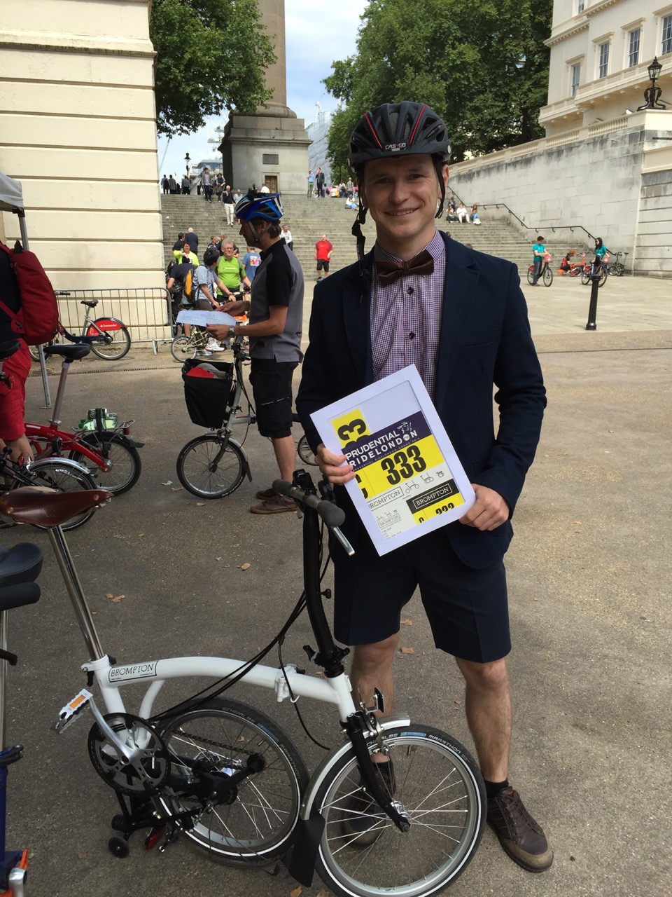
Но вот подробных правил в запасном конверте не оказалось. И, если про крепление номеров и установку транспондера всё было более или менее понятно, то что такое «grid setup», почему участники разделены на группы, как будет даваться старт групп, оставалось загадкой до самого начала грид сетапа.
После получения конверта нужно было прицепить номера на велосипед и костюм, затем пройти в глубь зоны для участников, к палатке с буквой своей группы и установить транспондер (оранжевый диск, крепится на перо передней вилки) на велосипед. Рядом с палатками была организована парковка, на которой можно было оставить велосипед до начала грид сетапа (этой возможностью мы с моей спутницей не воспользовался, так как собирались съездить на обед в Сохо).
После установки транспондера мы отправились осматривать зону для участников чемпионата. Народу ещё было немного и нам удалось пофотографироваться перед пьедесталом. 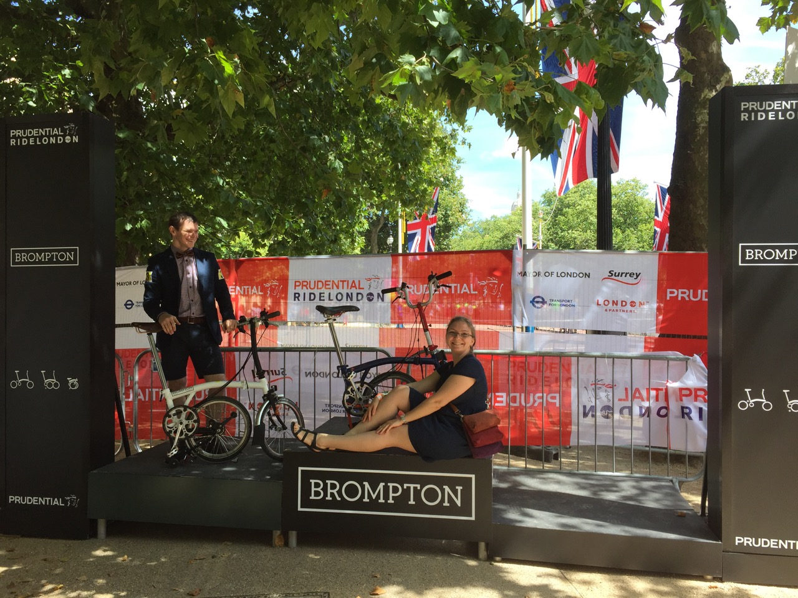
На тот момент уже была открыта палатка с аксессуарами и запасными частями Бромптон, рядом находился пункт технического осмотра и ремонта (своеобразный Бромптон Джанкшн выходного дня), а также пункт проката. 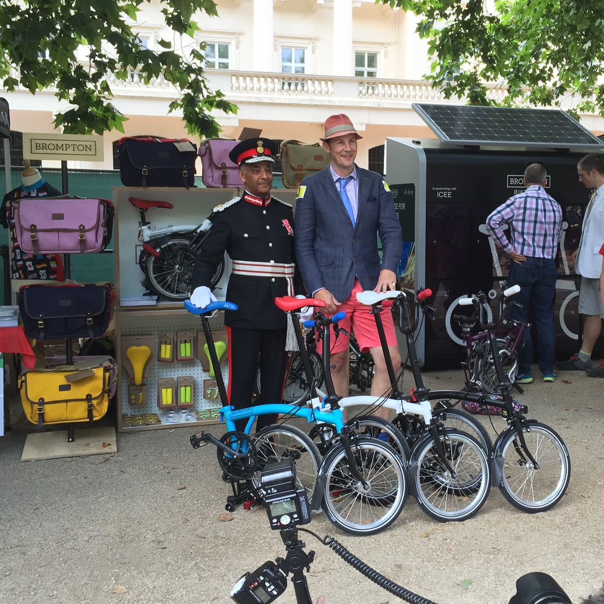
Так как велосипед к гонке был готов и новых проблем по дороге к трассе выявлено не было, то, взяв на память пару фирменных маек и зажимов на штаны, мы решили, что больше заняться в зоне для участников и гостей нечем и отправились на велах на обед.
Вернулись мы немного заранее до начала грид сетапа, потому что мне не давало покоя непонимание процесса (я даже предполагал, что будет заезд на один круг, в котором определяется стартовая позиция участника). Народу перед и внутри зоны для участников и гостей было уже порядочно, передвигаться в массе народа стало трудно. Была предпринята попытка выяснить у девушек на входе, что же такое «грид сетап». Сначала нам ответили, что не знают (может, дело в моём произношении, а может, они просто не ожидали такого элементарного вопроса), но потом объяснили, что это просто выход на трассу и расстановка велосипедов рядом со своими номерами на старте.
Спустя короткое время, была объявлена подготовка к старту и участники начали двигаться к выходу на трассу. Первыми выходили участники группы A, потом B и так далее. Тут организаторы специально ничего не делали, видимо, по опыту прошлых гонок все понимали, что к чему (ну а новички, вроде меня, наблюдали, что происходит и повторяли). 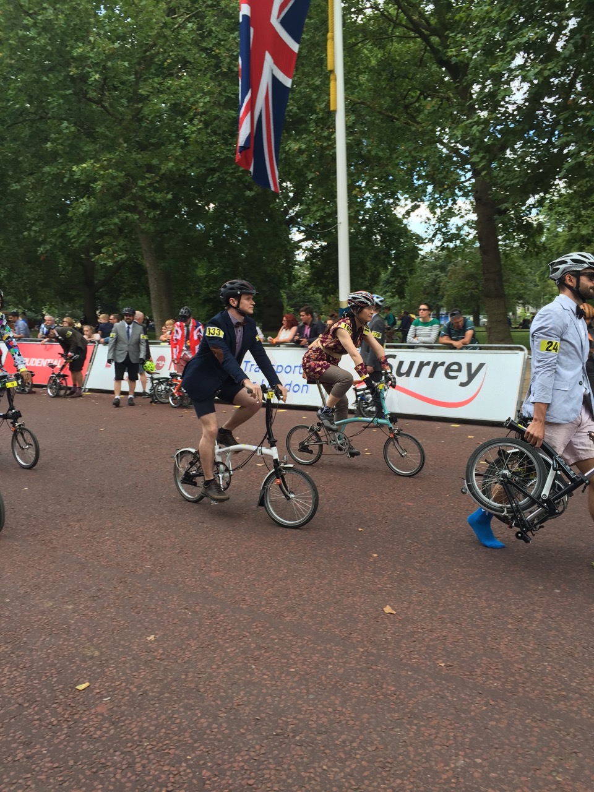 Дальше до самого старта все участники ждали на позициях напротив своих велосипедов. К сожалению, я совсем не мог разобрать, что говорят в микрофон, потому в основном наблюдал, что происходит вокруг меня. И пытался унять волнение, общаясь с соседями отрывистыми фразами. 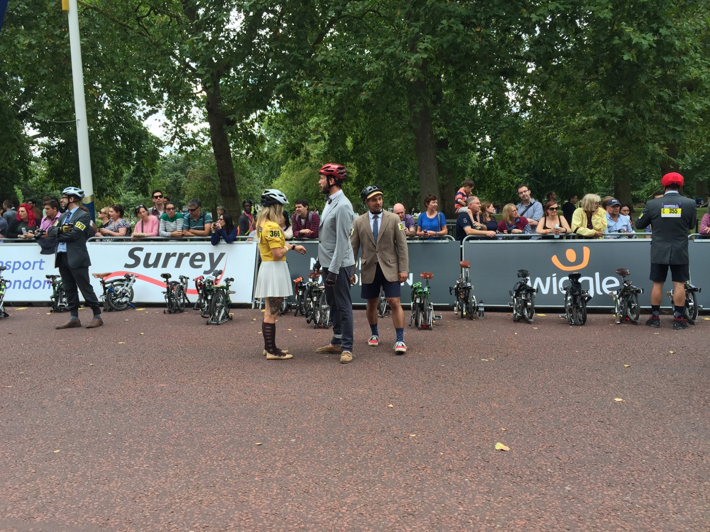 Уже позже стало понятно, что можно было не торопиться вставать на стартовую позицию и поучаствовать в соревновании на раскладывание-складывание велосипеда, которое проходило в это же время в зоне для участников и гостей.
В 17 часов начался старт: ведущий объявлял, какой группе нужно приготовиться и затем считал до десяти. После этого участники объявленной группы должны были подбежать к своим велосипедам, разложить и начать гонку. 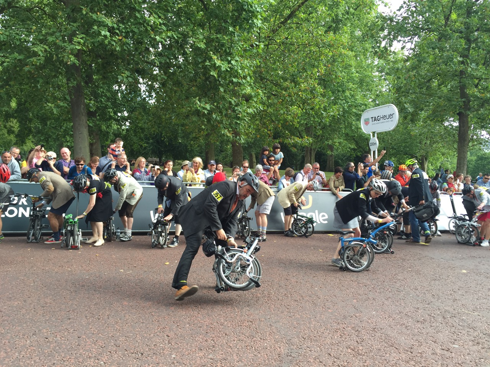 Для меня тут всё прошло гладко: я довольно быстро и без проблем разложил велосипед и поехал. Даже на долю секунды замешкался от удивления, что одним из первых в своей группе оказался в седле. Чтобы скорее выбраться из толпы стартующих я очень резко набрал скорость, но на середине первого круга понял, что так ехать все круги мне не по силам и сбавил темп. На первом же повороте был один острый момент: один из участников, обогнав меня, резко перестроился передо мной и чуть-чуть не зацепил своим задним колесом моё переднее, я с трудом успел увернуться. Думаю, гонка бы для меня закончилась, если бы мы не разъехались. Правда, он успел повернуться ко мне, помахать рукой и извиниться. 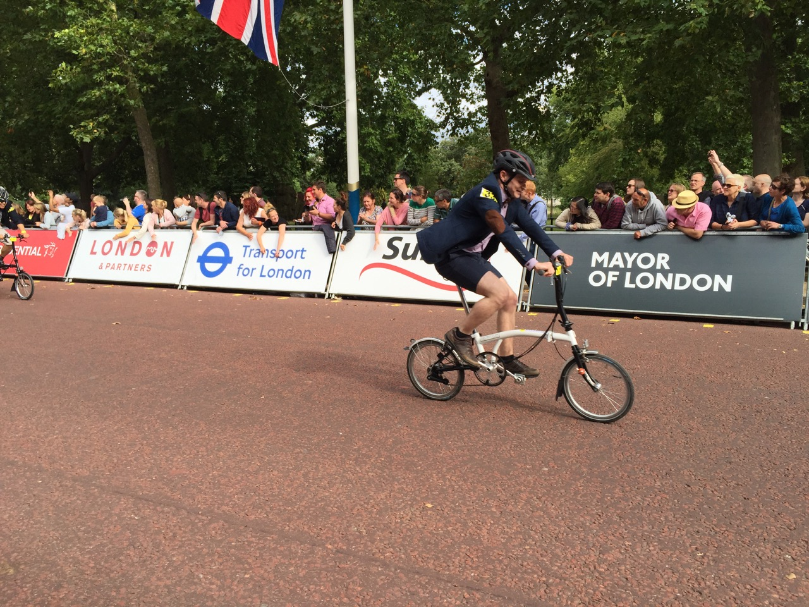
В остальном гонка для меня прошла спокойно и была, скорее, борьбой с самим собой: ехать быстрее и экономить силы так, чтобы не сойти с дистанции раньше, чем гонка будет завершена. Когда финишировал лидер, я даже обрадовался, что мне уже нужно ехать не по трассе, а на «пит-стоп», к палаткам, где устанавливали транспондеры. Там же, у палаток всем участникам вручали бутылку воды и медаль за участие. Снимали транспондер. 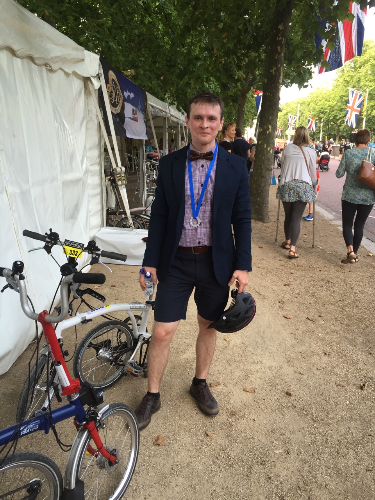
После финиша было много времени (около часа), чтобы отдохнуть и прийти в себя. В зоне для участников и гостей раздавали прохладительные напитки, можно было перекусить. Затем началось награждение победителей. После награждения люди стали неспеша покидать чемпионат (на выходе всем участникам выдавались фирменные сумки с небольшими сувенирами) и разъезжаться по Лондону прямо на своих спортивных снарядах, на которых ещё только полтора часа назад гнали изо всех сил вокруг Сент Джеймс парка. Мы тоже поехали до своей гостиницы на бромптонах.
Ссылки:
- Шинстаграм
- Альбом со дня гонки
- Альбом запакованного в B-bag велосипеда
- Подробные правила чемпионата
- Историческая тема на российском форуме Brompton
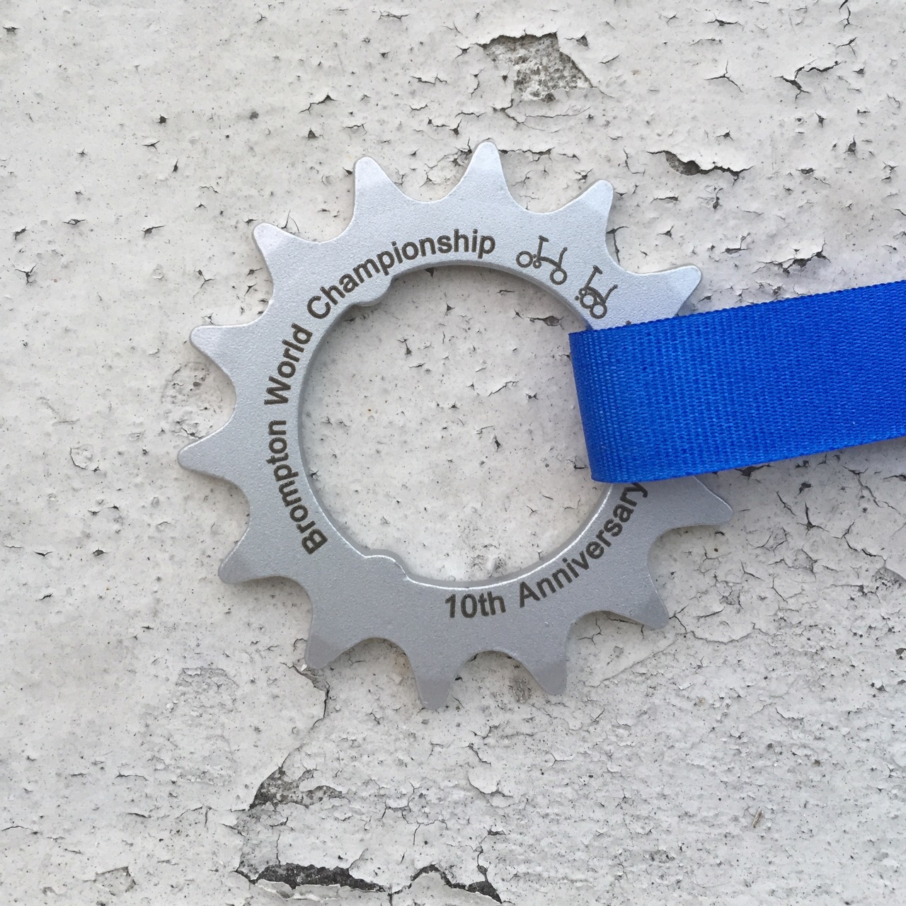